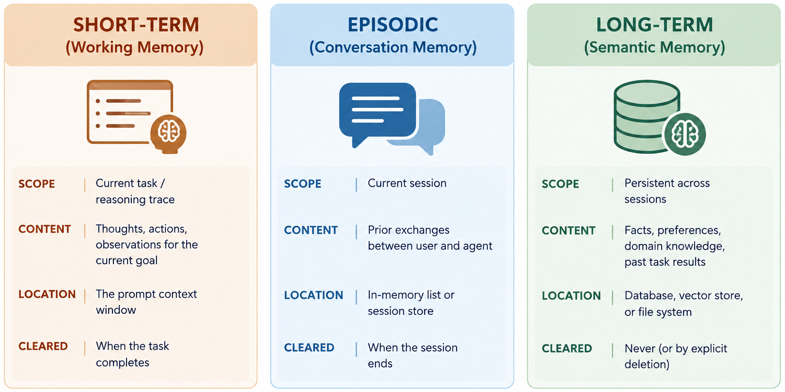

Remark
These lecture notes are in early access and will continue to evolve based on classroom experience and feedback.
8.4. Agent Memory Systems#
8.4.1. Learning objectives#
By the end of this section, you should be able to:
Distinguish the three types of agent memory: short-term working memory, episodic conversation memory, and long-term semantic memory.
Explain how working memory is implemented using the prompt context window.
Implement episodic memory as an append-only conversation log.
Implement a basic long-term memory store with semantic recall using keyword or embedding-based retrieval.
Explain the trade-offs between the three memory types in terms of capacity, recall precision, and implementation complexity.
8.4.2. Why Agents Need Memory#
An agent with no memory treats every reasoning step in isolation. This creates three classes of failure:
Within-task repetition — the agent calls the same tool twice because it forgot the first result.
Within-session forgetting — the agent cannot reference information the user provided earlier in the conversation.
Across-session loss — every new session starts from zero, even for returning users with established preferences.
Each failure class requires a different memory strategy.
The working/episodic/long-term decomposition below is consistent with recent taxonomies of memory in LLM-based agents [Wang et al., 2024], and the retrieval-based design used for long-term memory follows the memory-stream approach popularized by generative agent architectures [Park et al., 2023].
8.4.3. Three Types of Agent Memory#


Fig. 8.8 Comparison of the three primary agent memory systems: short-term working memory, episodic conversation memory, and long-term semantic memory, detailing their scope, content, location, and clearance lifecycle.#
8.4.4. Working Memory: the Context Window#
Working memory is the simplest memory type — it is just the prompt. Every thought, action, and observation the agent generates becomes part of the growing context that conditions subsequent reasoning:
Working memory grows with every step in the agent loop. For long tasks (10+ steps), it may approach the context window limit. A common mitigation is to summarize the working memory trace every N steps, replacing the growing trace with a compact summary.
8.4.5. Episodic Memory: Conversation Log#
Episodic memory records the history of exchanges between the user and agent within a session:
Episodic memory is typically injected at the start of the agent’s context window as a “conversation history” section, before the current task. The n_recent parameter limits how much history is injected — a balance between recall and context window consumption.
8.4.6. Long-Term Semantic Memory#
Long-term memory persists facts across sessions. A simple implementation uses keyword-based lookup over a list of stored facts:
For production systems, the keyword-overlap retrieval should be replaced with vector similarity search using sentence embeddings (FAISS [Johnson et al., 2019], ChromaDB, or Pinecone). This enables semantic retrieval — finding relevant facts even when the query doesn’t share exact words with the stored fact.
8.4.7. Integrating Memory into an Agent#
A complete agent memory system combines all three types:
8.4.8. Exercises and discussion#
Memory type selection For each of the following agent queries, identify which memory type (working, episodic, or semantic) is primarily needed: (a) “What did I ask you about yesterday?”, (b) “Continue the analysis from the previous step”, (c) “My preferred output format is always JSON — remember this for all future responses”, (d) “What is the result of the calculation I asked you to do two steps ago?”
Context window budget An agent has a 2,048-token context window. The system prompt uses 200 tokens. The current task goal is 50 tokens. Estimate how many tokens each memory type consumes (5 recent episodic exchanges at 60 tokens each, 3 semantic facts at 30 tokens each, 4 working memory steps at 80 tokens each). Does everything fit? If not, what would you cut first?
Keyword vs. semantic retrieval Populate a
SemanticMemorywith 10 facts about a topic. Submit 5 queries — some that use the exact words from stored facts and some that are semantically related but use different vocabulary. Compare the recall results from keyword matching vs. what you would expect from embedding-based similarity search. For which queries does keyword matching fail?